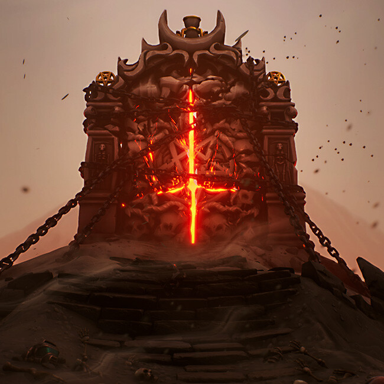

née SAMAEL · O Esquecido
Ninguém escolhe ser Demonizado. Mas o processo nunca pede permissão.
Começa com algo pequeno. A sensação de ser observado num quarto vazio. Sombras que se movem no limite do campo de visão. Vozes que chegam perto de ser palavras — mas nunca chegam. A medicina chama de psicose. A ciência chama de distúrbio de percepção. Ragnarok chama de Estágio Um.
A Demonização é a erosão gradual da barreira entre o mundo humano e o plano oculto. Cada pessoa nasce com essa barreira intacta. Quando ela começa a ceder, o outro lado não invade. Ele vaza. Como água por uma rachadura que ninguém vê crescer.
Nos estágios avançados, a direção se inverte. A pessoa não apenas vê o oculto — ela começa a ser vista por ele. Em casos extremos, o indivíduo passa a funcionar como canal involuntário entre os dois planos: sem controle, sem compreensão, sem descanso.
Ninguém nasce com Demonização. Ou assim se acreditava.
Ragnarok não tem sede num bunker secreto. Seus membros não usam capas. Tem escritórios. Tem protocolos. Tem organograma.
Fundada há séculos sob diferentes nomes e formatos, a ordem existe com um objetivo que seus membros repetem como mantra: garantir o equilíbrio entre o mundo visível e o oculto. Seus agentes estão em governos, hospitais, forças armadas, universidades. Eles mapeiam ocorrências do sobrenatural, neutralizam ameaças, recrutam indivíduos com capacidades especiais — e eliminam tudo aquilo que classificam como desequilíbrio.
Ragnarok não é uma organização de homens maus. É uma organização de homens convictos. Essa distinção é mais perigosa do que qualquer maldade.
O que nenhum membro compreende completamente é que o fluxo de influência não corre numa direção só. Ragnarok acredita controlar o portal. O portal, há gerações, controla Ragnarok. Seus superiores — por mais que resistam, por mais que não queiram — são alvos tanto quanto servos. Peças movidas com a paciência de algo que não precisa de pressa, porque nunca precisou.

Nos textos gnósticos antigos, Yaldabaoth é o Demiurgo — o criador imperfeito do mundo material. Um ser que acredita ser Deus, mas é, na verdade, cego. Aqui, Yaldabaoth não é uma entidade. É um lugar.
O maior portal entre o mundo humano e o que existe do outro lado dele. Uma abertura tão vasta que a mente humana — ao contemplá-la — não enxerga uma porta. Enxerga um deus. Ragnarok foi construída ao redor dele. Para protegê-lo, dizem. Mas portais não precisam de proteção. Portais precisam de movimento. E Ragnarok, sem saber, garante isso há séculos.
A cidade não tinha nome bonito. Tinha número de registro e coordenadas estratégicas.
Fundada pelo governo como ponto de intermediação entre áreas de extração mineral, era o tipo de lugar que aparecia em mapas administrativos mas não em conversas. Pequena o suficiente para que todos se conhecessem. Grande o suficiente para que ninguém se importasse muito.
Samael nasceu lá.
Desde o começo, ele viu coisas. Não monstros. Não fantasmas de filme. Presenças — formas sem bordas definidas que existiam nos cantos dos cômodos, que seguiam pela rua sem barulho, que às vezes paravam e olhavam de volta. Ele tinha quatro anos quando percebeu que a criatura sentada na beirada da cama de seus pais todas as noites era algo que só ele via. Tinha seis quando entendeu que não devia falar sobre isso.
Não adiantou. Crianças percebem quando alguém está olhando para o vazio com atenção demais.
Aos poucos, o espaço ao redor de Samael foi ficando maior. Os amigos foram se afastando um a um. A família foi estranhando em silêncio. Os pais tentaram, por um tempo. Depois tentaram menos. Não por crueldade. Por cansaço. Por não saberem o que fazer com um filho que descrevia o mundo de um jeito que não existia no dicionário deles.
Ele não era louco. Era, naquele momento, apenas alguém que via demais — sem vocabulário para o que via, sem ninguém que soubesse o idioma.
Ele saiu de casa numa madrugada sem aviso e sem plano.
Não foi um gesto dramático. Não havia destino, mochila preparada, carta sobre a mesa. Apenas o ponto onde continuar na mesma casa pareceu mais impossível do que sair para o escuro.
O que veio depois foram anos difusos — cidades atravessadas sem rastro, trabalhos que duravam até que alguém percebesse que Samael não era exatamente comum, pessoas que se aproximavam e recuavam quando entendiam que ele não estava presente da forma que esperavam. Ele não procurava nada específico. Mas reconhecia coisas. Uma rua com uma densidade de presenças diferente das outras. Um prédio que emanava algo que o fazia desviar sem saber por quê. Um beco onde o ar parecia dobrar.
O mundo oculto ao redor dele não diminuiu quando cresceu. Foi ficando mais nítido. Mais texturizado. Mais barulhento. Ele apenas ainda não tinha estrutura para entendê-lo.
O homem que os outros chamavam de O Justo não tinha o aspecto de alguém que carregava o peso que carregava. Era velho da forma que certas pessoas são velhas — não de forma frágil, mas de forma consolidada. Como pedra que foi muita coisa antes de virar pedra.
Ele encontrou Samael numa cidade que nenhum dos dois deveria ter motivo para estar, num dia em que Samael estava parado na calçada olhando para algo que mais ninguém via. O Justo olhou na mesma direção. Ficou quieto por um momento.
— Ela está aí faz três dias. Geralmente somem antes disso.
Samael olhou para o homem. Foi a primeira vez, em anos, que alguém olhou na direção certa.
O que O Justo ofereceu não foi poder. Não foi treinamento. Foi vocabulário. Estrutura. A diferença entre ser assombrado pelo que se vê e ser capaz de nomear o que se vê. Ele abriu uma porta — e Samael entrou sem hesitar, porque era a primeira porta em toda sua vida que fazia sentido.
O Justo carregaria isso como pedra no peito por muito tempo. Que foi ele quem abriu.
Samael encontrou Ragnarok. Ou Ragnarok o encontrou. A distinção nunca ficou totalmente clara.
O que ficou claro foi que, dentro daquela estrutura, pela primeira vez em sua vida, ele não era um problema a ser gerenciado. Era um recurso a ser desenvolvido. Ragnarok tinha nome para o que ele era. Tinha protocolos. Tinha uma hierarquia de pessoas que viam o que ele via, operavam no idioma que ele pensava, entendiam o mundo da forma que ninguém antes havia entendido com ele.
Ele cresceu na ordem com uma velocidade que desconfortava os mais antigos e fascinava os superiores. Não porque buscasse prestígio — Samael nunca foi movido por isso. Mas porque tinha uma capacidade rara de estar completamente presente no que fazia.
Sua Demonização revelou-se algo singular. Ele não apenas percebia o oculto. Com esforço e intenção, conseguia expandir essa percepção em outros. Abrir a mesma rachadura em outras barreiras. Ragnarok chamava isso de recurso. Samael demorou tempo demais para perguntar o que acontecia com as pessoas depois.
O título que recebeu foi O Esquecido. Dentro de Ragnarok, soava a prestígio. O operativo que age sem registro, sem rastreamento, sem entrada nos arquivos formais. Indispensável e invisível ao mesmo tempo. Só mais tarde entenderia que essa era a função dos descartáveis.
A descoberta não foi dramática. Não houve revelação com trovão.
Houve apenas Samael — com a meticulosidade silenciosa que sempre o definiu — chegando mais perto do que deveria de algo que Ragnarok mantinha no centro de tudo. Passo a passo. Pergunta a pergunta. Até que chegou perto o suficiente para ver.
Não um deus. Não um emissário.
Uma abertura.
Vasta e antiga, pulsando com uma frequência que ele sentiu nos ossos antes de entender com a mente. E ao redor dessa abertura, servindo-a com convicção sincera, uma ordem inteira de pessoas que acreditavam proteger o equilíbrio do mundo. Sem saber que eram peças movidas por aquilo que juravam conter.
Samael ficou olhando por um tempo que não soube medir. Depois foi avisar.
Ele não tentou fugir. Não armou plano. Não recrutou aliados.
Ele foi até as camadas de Ragnarok e disse o que viu.
Essa foi, talvez, a coisa mais Samael que Samael poderia ter feito — e também a mais ingênua. Acreditar que a verdade seria suficiente. Que pessoas que dedicaram a vida ao equilíbrio do mundo iriam querer saber quando o equilíbrio era mentira.
As camadas superiores não debateram. Não investigaram. Reagiram com a velocidade silenciosa de instituições que foram tocadas onde não devem ser tocadas.
Ele foi capturado. O que veio depois não foi punição no sentido comum. Foi estudo. Samael — o único ser humano conhecido a nascer com Demonização — tornou-se objeto central de uma investigação que Ragnarok chamava de necessária. Ele não colaborou com nada. Resistiu com tudo que tinha. E foi sendo reduzido, metodicamente, sem pressa, enquanto isso.
O velho soube. Não se sabe como. A rede de silêncios e sussurros que atravessa o mundo oculto é mais eficiente do que qualquer sistema de inteligência. Ele soube.
E fez a única coisa que podia fazer — que era também a coisa mais imprudente que alguém em sua posição poderia fazer. Ele entrou.
Não com exército. Não com plano elaborado. O Justo atravessou a sede de Ragnarok como alguém que carrega um peso que não aguenta mais segurar. Andar por andar. Corredor por corredor. Lutando com uma determinação que não era raiva — era expiação. Era um homem tentando pagar uma dívida que sabia que não tinha moeda suficiente para quitar.
O que aconteceu naquele quarto, apenas O Justo sabe. Usou um feitiço de reposição de consciência — uma transferência. A mente de Samael deslocada do corpo que Ragnarok havia reduzido a material de estudo, transplantada para um corpo alheio. Uma casca disponível.
O Justo saiu. O corpo original de Samael desapareceu. E em algum lugar, num hospital psiquiátrico chamado Greyfall, um homem acordou sem saber quem era — num corpo que não era dele, com uma mente que mal era a sua.
Ragnarok tratou de garantir que O Justo nunca soubesse o suficiente: sua mente foi capturada, reorientada, e ele passou a trabalhar ao lado daqueles contra quem havia lutado. Sem memória. Sem escolha. O homem que invadiu tudo para salvar Samael hoje serve à ordem que o destruiu.
A maior crueldade não foi o que fizeram com Samael. Foi o que fizeram com o único homem que tentou impedir.
Não se sabe como ele saiu de Greyfall. Não é importante.
O que importa é a rua fria. O papelão. A figura de 1,80 metros com cabelos longos e tatuagens que cobrem os braços — rabiscos, linhas, setas, manchas escuras sem origem definida. Tatuagens que ele mesmo fez, guiado por sonhos que não entendia, tentando registrar o que desaparecia ao acordar e deixava apenas contorno e resíduo. Um arquivo escrito pelo próprio autor numa língua que ainda não consegue ler.
O nome que escolheu foi Cain. Não por referência consciente. Não por significado que soubesse nomear. Quando a mente está cheia de perguntas que não têm resposta, às vezes é preciso um ponto fixo. Cain era isso. Era suficiente.
Ele não sabe que em outra língua, num texto muito mais antigo, Cain é descrito como o filho de Samael. Que a mitologia conecta os dois nomes por sangue e por maldição. Que ao escolher o nome do filho, ele — sem memória e sem intenção — assinou o próprio.
Onde estou?
Não importa.
Em algum lugar, Ragnarok continua operando. O portal continua pulsando com a paciência de algo que nunca precisou de pressa. O Justo trabalha ao lado dos que destruíram tudo que tentou proteger. E um homem sem memória, deitado num papelão, carrega nas costas uma história que ainda não sabe que é sua.
Os sonhos não param. As tatuagens, às vezes, parecem apontar.
E Cain, filho de Samael, aguarda — sem saber que é exatamente isso que faz.